| Average_Age | Percent_Men | Percent_Women | Percent_Afraid_of_Needles | Percent_Familiar_with_RFID |
|---|---|---|---|---|
| 38 | 49.11 | 50.89 | 23 | 85.84 |
Final Analysis for RFIDinMe
Investigating the use of alternate RFID devices
Abstract
Radio-frequency identification (RFID) technology is increasingly integrated into tap access systems, contactless payments, and modern security applications. This study evaluates which design attributes would make a consolidated RFID device most appealing to consumers. The proposed product would store multiple RFID credentials, such as key fobs, ID cards, and payment cards, within a single device. Key attributes examined included physical form factor (card, ring, bracelet, or implant), price, operating-system compatibility (iOS, Android, or both), read range, and tag capacity. An analysis of user preferences revealed several dominant trends. Participants strongly favored the lower-priced options and showed the highest preference for a ring-style device. Tag capacity had the greatest positive influence on utility, and iOS compatibility was consistently preferred over Android or dual-system options. Based on these results, the optimal market offering is a ring-form RFID device with high tag capacity, extended read range, and iOS compatibility.
Introduction
Currently, RFID devices are becoming ever more prevalent in common day use. As students, your ID card allows you to tap into buildings at will. For commuters, a simple tap and your fare is paid for. In this case study, our team aimed to create an RFID device that met consumer needs by providing a vast array of attributes to choose from. A wildcard sub attribute of choice was also added, which was the addition of implantable RFID devices.
These types of devices are small, non-toxic, pill-shaped devices that can be self-implanted into your hand and can act as a conventional RFID device as described above. This is commonly known as Bio-Hacking, and an X-ray of this can be seen below in Figure 1, showing a pill-like device implanted in the hand of an individual.

Further attributes for this survey are things such as price, compatibility, capacity, and range, which will be discussed further in the survey design section of this survey.
Survey Design
Final Survey Layout
Our survey was split into three major components:
Survey Introduction
This portion of the survey filtered out respondents under the age of 18 and informed individuals if they weren’t already knowledgeable about this field of devices, using a hidden page that described what the devices are and how many people already use them in the real world.
Survey Questions
Here, respondents were asked 6 questions pulled from our choice design. Each of which has three options, which contain in itself 5 major attributes: The Type of Device, Price, Compatibility, Tag capacity, and the range of the device. The levels of each attribute can be found in the table below:
Survey Demographics
After completing all survey content, users are asked to complete certain questions about their demographics, such as year and gender. Other things, such as survey feedback, we’re also asked, but are not crucial to the analysis.
| Attribute Name | Levels | Unit |
|---|---|---|
| Device Type | Card, Ring, Bracelet, Implantable | N/A |
| Price | $25, $50, $75 | USD |
| Compatibility | iOS, Android, Both | Operating System |
| Tag Capacity | 1, 3, 5 | kilobytes |
| Device Range | 1, 3, 5 | ft |
Differences from the Pilot
Large differences came from the number of weed-out questions, where now the survey only contains the age verification question. Another major difference is the lack of images within the survey, but this has now been populated with images accurately depicting the available options. See Appendix 9 for an example of this.
Data Analysis
In this section, the team will detail the analysis conducted on our final data.
Sample Description
Our total number of respondents ended up being 226. To each of those 226 respondents, we asked 6 choice questions and received a total of 1,281 responses. The following table shows a breakdown of different demographic questions we asked on our survey.
Data Cleaning
Data was cleaned by first computing the time values for the survey. Next, we filtered out the bad responses, like respondents who did not complete all of their questions, or respondents who did not respond to all of the choice questions. Then we removed respondents who went through the survey too fast, put the data into “long” format, added values for the respondent and observer identifier, and put the ID variables up front. After this, we had 210 respondents remaining.
Modelling
Modelling is where our team began running into issues. One thing to look out for in logit models is whether or not respondents preferred a product if it cost more. Since this is generally not how consumers make decisions, if price has a positive beta coefficient, the entire population’s data is suspect. After running the model, we found that our real data had a positive beta coefficient. Below is our real data’s utility model:
\(u_{j} = 0.0027x_{j}^{price} - 0.0315x_{j}^{capacity} + 0.2463x_{j}^{range} - 0.1234\delta_{j}^{typeRing} - 0.0281\delta_{j}^{typeImplant} - 0.0761\delta_{j}^{typeCard}\) \(- 0.0214\delta_{j}^{compatabilityAndroid} + 0.0868\delta_{j}^{compatabilityiOS}\)
| Variable | Estimate | Std. Error | z-value | Pr(>|z|) | Sig |
|---|---|---|---|---|---|
| price | 0.0026587 | 0.0011029 | 2.4106 | 0.015925 | * |
| capacity | -0.0315492 | 0.0208764 | -1.5112 | 0.130729 | |
| range | 0.2463251 | 0.0929895 | 2.6490 | 0.008074 | ** |
| type_ring | -0.1234112 | 0.0974554 | -1.2663 | 0.205393 | |
| type_implantable | -0.0281179 | 0.0968137 | -0.2904 | 0.771485 | |
| type_card | -0.0761160 | 0.0946994 | -0.8038 | 0.421533 | |
| compatability_android | -0.0214399 | 0.0829076 | -0.2586 | 0.795944 | |
| compatabilityi_os | 0.0868401 | 0.0848465 | 1.0235 | 0.306073 |
To combat this, we decided to simulate a model with reasonable priors and work from there. Below is the baseline model we used for this project:
\(u_{j} = -0.5047x_{j}^{price} + 1.66915x_{j}^{capacity} + 1.0040x_{j}^{range} + 0.9881\delta_{j}^{typeRing} - 1.0987\delta_{j}^{typeBracelet} - 1.9183\delta_{j}^{typeImplant}\) \(- 3.5868\delta_{j}^{compatabilityAndroid}- 1.3692\delta_{j}^{compatabilityBoth}\)
| Variable | Estimate | Std. Error | z-value | Pr(>|z|) | Sig |
|---|---|---|---|---|---|
| price | -0.504721 | 0.045138 | -11.1817 | < 2.2e-16 | *** |
| capacity | 1.669097 | 0.151638 | 11.0071 | < 2.2e-16 | *** |
| range | 1.003991 | 0.104840 | 9.5764 | < 2.2e-16 | *** |
| type_ring | 0.988098 | 0.277163 | 3.5650 | 0.0003638 | *** |
| type_bracelet | -1.098712 | 0.291453 | -3.7698 | 0.0001634 | *** |
| type_implant | -1.918279 | 0.319947 | -5.9956 | 2.027e-09 | *** |
| compatability_android | -3.586827 | 0.383914 | -9.3428 | < 2.2e-16 | *** |
| compatability_both | -1.369225 | 0.255018 | -5.3691 | 7.912e-08 | *** |
Below, please see a record of the priors used to create this model:
| Attribute | Level | Prior Coefficient |
|---|---|---|
| price | Continuous | -0.50 |
| type | Ring | 2.00 |
| type | Bracelet | 1.00 |
| type | Implant | -0.75 |
| type | Card (ref) | 0.00 |
| compatability | Android | -2.00 |
| compatability | Both | 1.00 |
| compatability | iOS (ref) | 0.00 |
| capacity | Continuous | 1.50 |
| range | Continuous | 1.00 |
Results
<<<<<<< HEAD In this section, our team will go over the results from our study.
Willingness to Pay
Willingness to pay describes how important different features of product are by showing how willing a customer is to pay for a specific version of that feature. Below are four charts detailing how willing to pay our simulated customer base is for our four main attributes (not including price): the range of the RFID device, the capacity of the RFID device, the type of device, and what operating system the device can operate with.
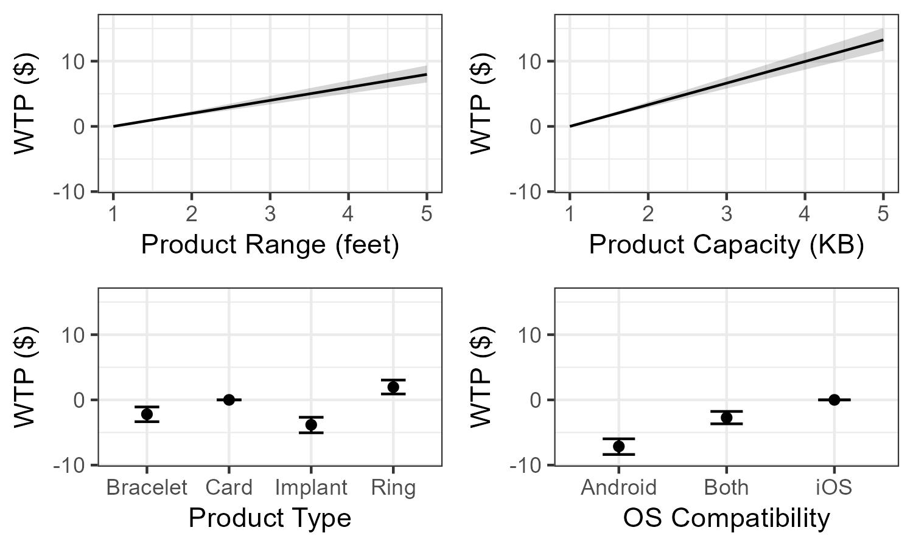
There are two types of attributes on the plots above: continuous and discrete. The continuous variables, on top, show a linear relationship with how much a customer is willing to pay and the increase in performance. In this case, performance is measured by the range at which the RFID device can operate and how much data it can store. The discrete variables, the type of device and operating system, tell a slightly different story. The “card” and “iOS” options for type and OS respectively are the baseline choices. Any type or OS above the baseline is preferred to it and vice versa. Here, we see that a ring RFID type with iOS compatibility would be the most heavily preferred combination.
Overall, our simulated customer base is much more willing to pay for device performance than type or operating system compatibility.
Market Scenario
The below table shows our baseline for our market scenario.
| Alt ID | Obs ID | Price | Range | Capacity | Ring | Bracelet | Implant | Android | Both |
|---|---|---|---|---|---|---|---|---|---|
| JAKCOM Ring | 1 | 20 | 1 | 3 | 1 | 0 | 0 | 0 | 1 |
| Fobster Bracelet | 1 | 16 | 1 | 1 | 0 | 1 | 0 | 0 | 1 |
| RFIDinMe | 1 | 25 | 1 | 5 | 0 | 0 | 1 | 0 | 1 |
| Jiaxing Card | 1 | 15 | 1 | 1 | 0 | 0 | 0 | 0 | 1 |
All RFID devices typically have a short range to prevent theft. Price justifications for most of the competitors was found on Amazon, links are below:
Our market share below illustrates that even with a high capacity and competitive price, RFIDinMe would only obtain market share of about 10%.
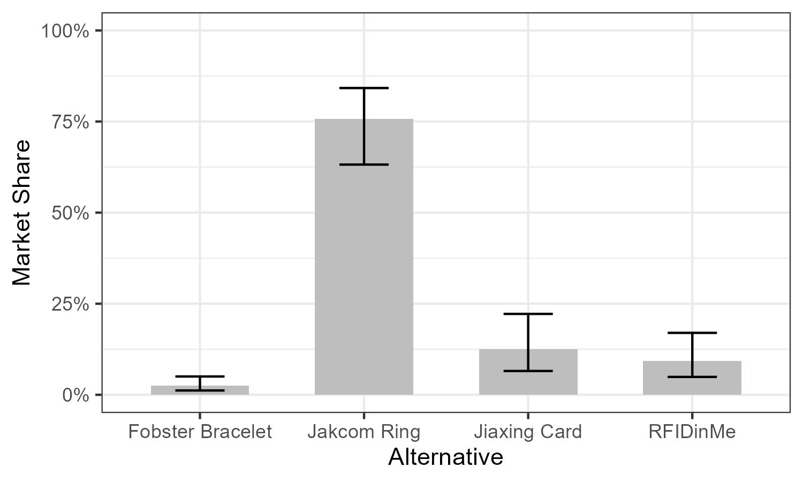
We would argue that while there is potential for implant RFID devices to enter the market, expecting them to generate a large market share is optimistic. Cheap and pain free alternatives like rings are much easier to market and not nearly as scary. We believe that to improve product adoption, we would have to greatly increase the storage capacity of RFIDinMe. RFIDinMe would have to be a one-tool-fits-all resource in the RFID market.
Sensitivity Analysis
The following table shows products sensitivity to price.
| Price ($) | Market Share | Lower 95% CI | Upper 95% CI |
|---|---|---|---|
| 10 | 0.995 | 0.984 | 0.998 |
| 11 | 0.992 | 0.975 | 0.997 |
| 12 | 0.986 | 0.963 | 0.995 |
| 13 | 0.978 | 0.943 | 0.991 |
| 14 | 0.964 | 0.914 | 0.985 |
| 15 | 0.941 | 0.872 | 0.973 |
| 16 | 0.906 | 0.813 | 0.954 |
| 17 | 0.854 | 0.734 | 0.923 |
| 18 | 0.779 | 0.635 | 0.874 |
| 19 | 0.680 | 0.520 | 0.802 |
| 20 | 0.562 | 0.403 | 0.703 |
| 21 | 0.437 | 0.292 | 0.585 |
| 22 | 0.319 | 0.199 | 0.460 |
| 23 | 0.220 | 0.129 | 0.343 |
| 24 | 0.146 | 0.080 | 0.246 |
| 25 | 0.093 | 0.048 | 0.169 |
| 26 | 0.059 | 0.028 | 0.114 |
| 27 | 0.036 | 0.016 | 0.076 |
| 28 | 0.022 | 0.009 | 0.049 |
| 29 | 0.014 | 0.005 | 0.032 |
| 30 | 0.008 | 0.003 | 0.021 |
This table illustrates a shift in probability from nearly 100% market share at a price of $10 and practically 0% at $30.
Below is a table illustrating sensitivity of the other attributes:
| Attribute | Case | Value | Market Share |
|---|---|---|---|
| other | base | — | 0.0934 |
| price | high | 16 | 0.9064 |
| price | low | 24 | 0.1458 |
| range | high | 2.4 | 0.2959 |
| range | low | 1.6 | 0.1584 |
| capacity | high | 1.6 | 0.0004 |
| capacity | low | 2.4 | 0.0013 |
The market share of our device is most sensitive to price, with a high-low difference of ~75%, followed by range (~14%) and capacity (0.09%). Below is a tornado plot illustrating this pheonomenon.
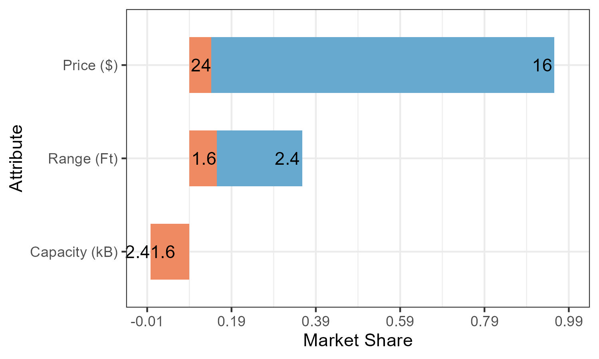
Final Recommendations and Conclusions
The proposed RFID implant was evaluated against alternative form factors using simulated preference data. The results indicate that the implant is unlikely to be competitive in the consumer market. The implant received the lowest estimated utility of all form types, while the ring was the only form factor with a positive beta. Consumers placed substantial value on storage capacity far more than on price, which suggests that competitiveness for any device, including an implant, relies heavily on the number of RFID tags it can store. Based on the magnitude of the negative form-factor beta, the implant would require either extremely high capacity or an unusually low price to be competitive with the ring option.
Several uncertainties constrain confidence in profitability estimates. The most significant is the true upper limit on the device’s capacity; capacity had the largest positive beta in the model, meaning that even moderate increases could meaningfully shift demand. In addition, the underlying dataset showed an unexpected positive beta on price, indicating either a respondent misunderstanding, a desire to avoid the implant by selecting higher-priced alternatives, or a correlation between price and perceived storage. These inconsistencies reduce confidence in the stability of the estimates and suggest that real-world data collection will be required before high-stakes decisions are made.
The strongest recommendation is to abandon the implant form factor and instead pursue development of a ring-based RFID device. A ring design is the only option with robust positive consumer preference. The device should prioritize high storage capacity, and the pricing should fall in the medium-to-low range to avoid eroding utility, though demand appears substantially more sensitive to capacity than to price. These recommendations are moderately robust, as they are supported by large differences in utility between form factors; however, true robustness cannot be confirmed until non-simulated data are collected.
The most promising opportunity to increase demand is to maximize the device’s storage capacity, as this attribute overwhelmingly dominated all others in the model. Additional opportunities include optimizing comfort and ‘wearability’ through the ring form factor and ensuring compatibility with major operating systems to broaden the potential user base. Together, these strategies offer the clearest path toward market success for the product.
Limitations
The primary limitation of this project was the lack of real data. All data was simulated and inputs from real survey respondents were not included. We would recommend, if further research was to be done, increasing the budget of the survey so as to improve the quality of respondents. This would be dependent on the interest of further researchers.
There are several unknowns that could impact our findings as well. There are plenty of regulatory gray areas that could inhibit the market adoption of implantable RFID technology. Additionally, there are more factors we could have included. For example, RFID operates on specific wavelengths, and we did not include any of those.
Appendix
This appendix is split into 11 sections, representing each page of the conjoint survey, including ONE conjoint question out of the 6.
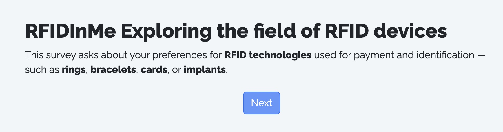
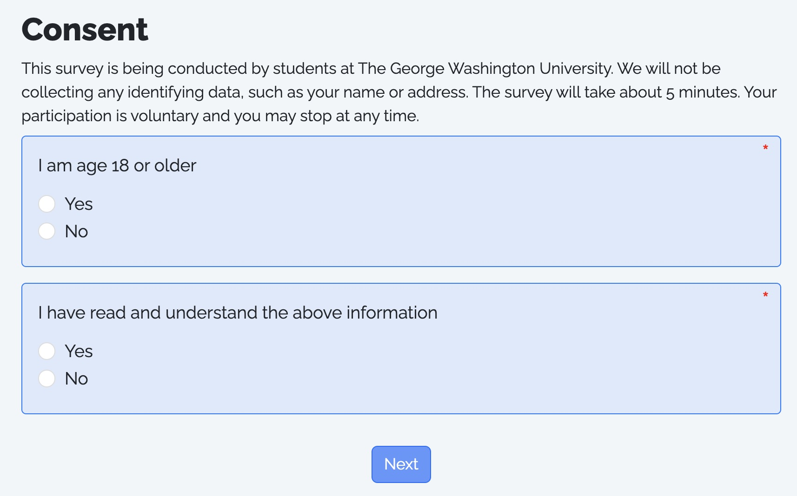
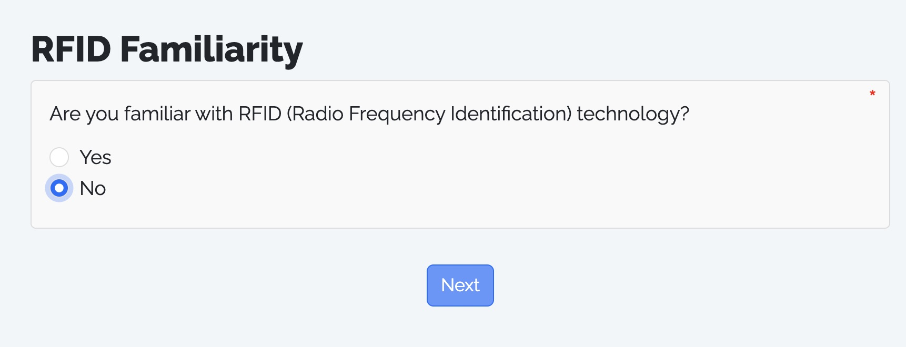
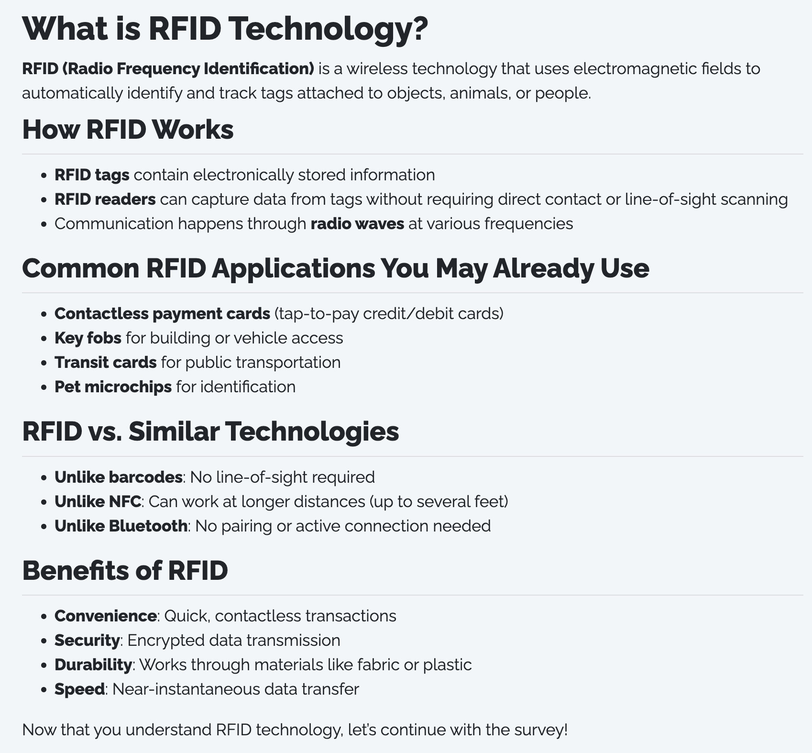
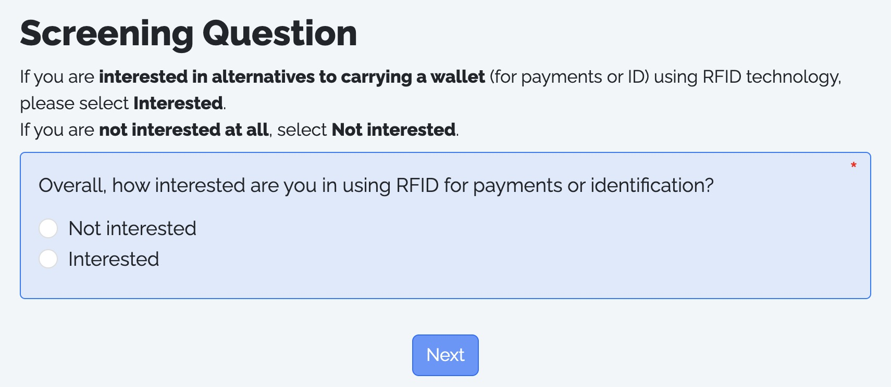
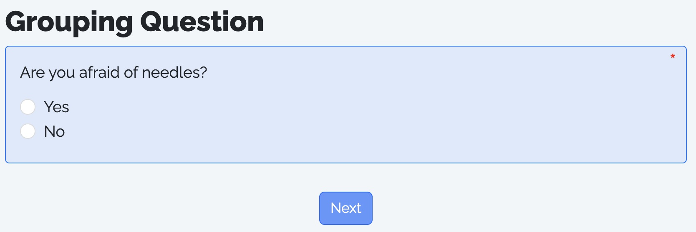
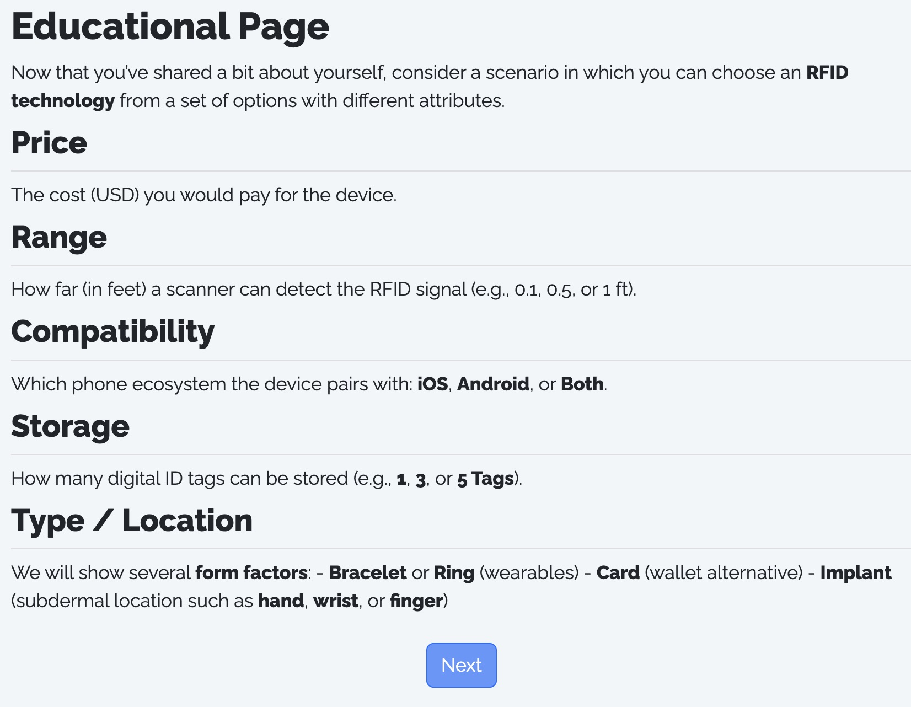
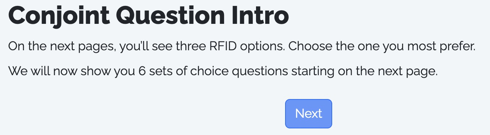
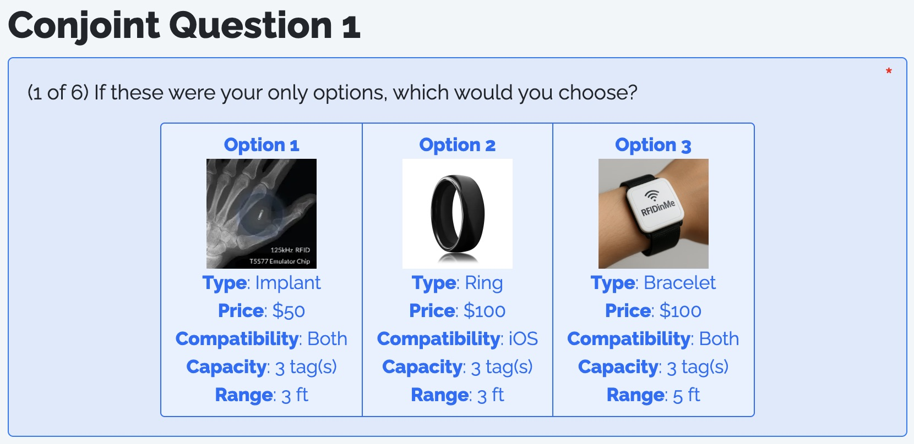
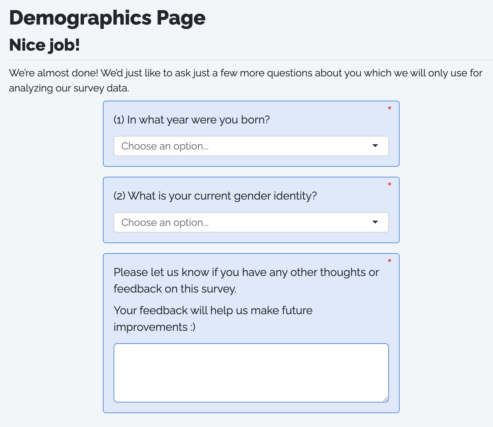
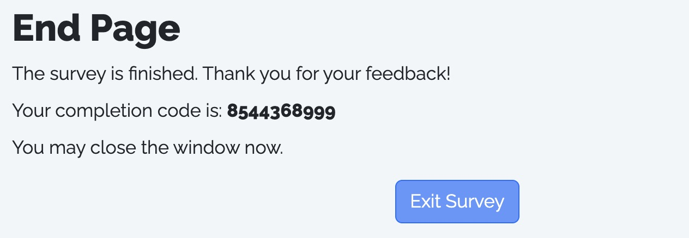